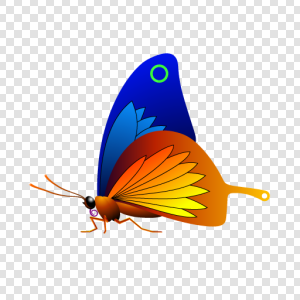
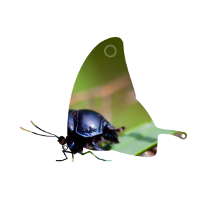

OpacityMask QML Type
Masks the source item with another item. More...
| Import Statement: | import Qt5Compat.GraphicalEffects |
| Since: | QtGraphicalEffects 1.0 |
| Inherits: |
Properties
- cached : bool
- invert : bool
- maskSource : variant
- source : variant
Detailed Description
| Source | MaskSource | Effect applied |
|---|---|---|
|  |  |

Example
The following example shows how to apply the effect.
import QtQuick import Qt5Compat.GraphicalEffects Item { width: 300 height: 300 Image { id: bug source: "images/bug.jpg" sourceSize: Qt.size(parent.width, parent.height) smooth: true visible: false } Image { id: mask source: "images/butterfly.png" sourceSize: Qt.size(parent.width, parent.height) smooth: true visible: false } OpacityMask { anchors.fill: bug source: bug maskSource: mask } }
Property Documentation
cached : bool |
This property allows the effect output pixels to be cached in order to improve the rendering performance.
Every time the source or effect properties are changed, the pixels in the cache must be updated. Memory consumption is increased, because an extra buffer of memory is required for storing the effect output.
It is recommended to disable the cache when the source or the effect properties are animated.
By default, the property is set to false.
Note: It is not supported to let the effect include itself, for instance by setting maskSource to the effect's parent.
invert : bool |
This property controls how the alpha values of the sourceMask will behave.
If this property is false, the resulting opacity is the source alpha multiplied with the mask alpha, As * Am.
If this property is true, the resulting opacity is the source alpha multiplied with the inverse of the mask alpha, As * (1 - Am).
The default is false.
maskSource : variant |
This property defines the item that is going to be used as the mask. The mask item gets rendered into an intermediate pixel buffer and the alpha values from the result are used to determine the source item's pixels visibility in the display.
| Original | Mask | Effect applied |
|---|---|---|
|
source : variant |
This property defines the source item that is going to be masked.
Note: It is not supported to let the effect include itself, for instance by setting source to the effect's parent.